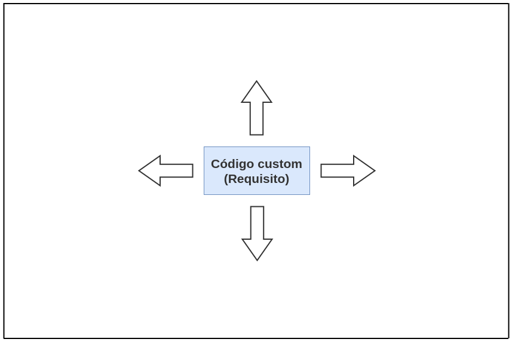
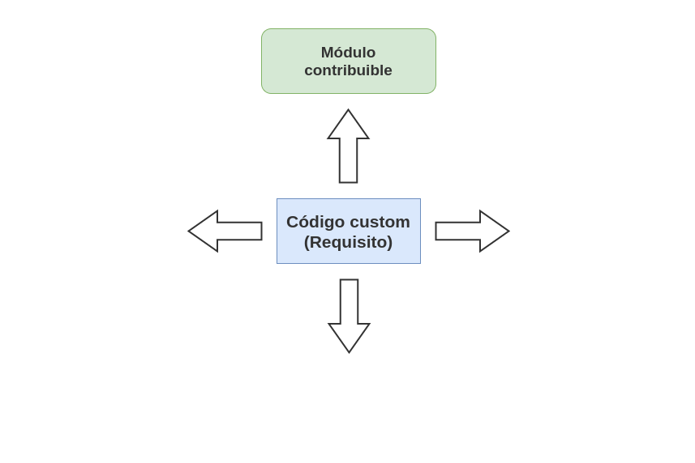
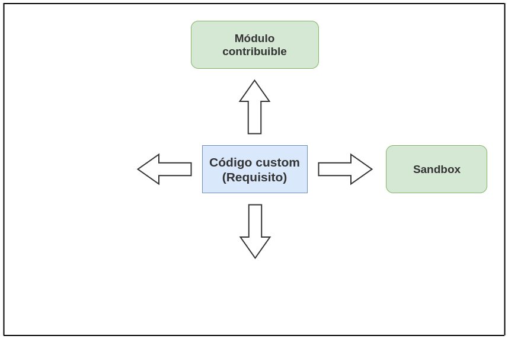
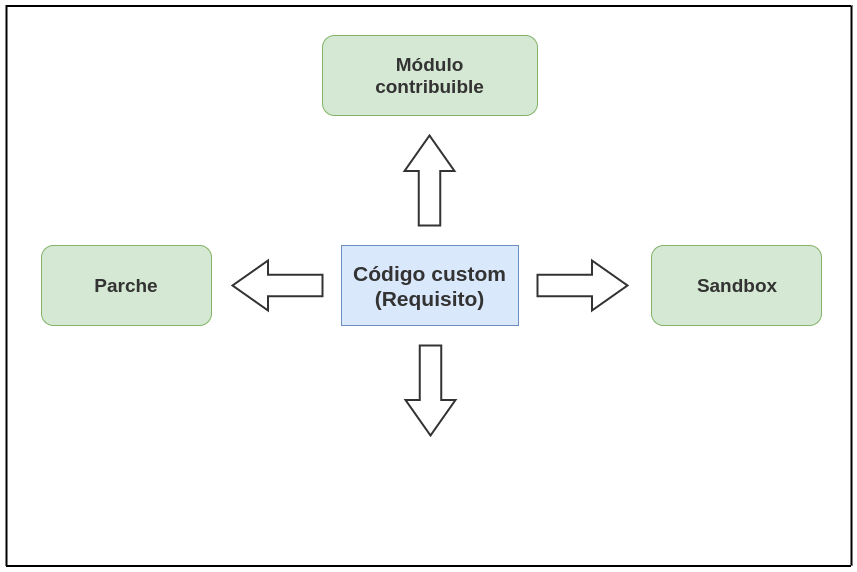
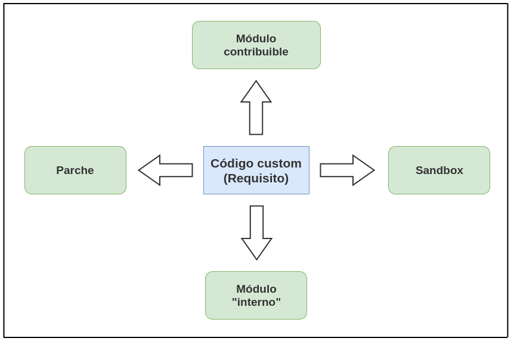
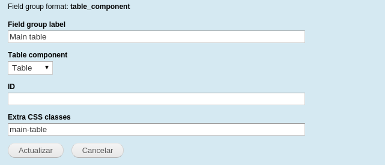
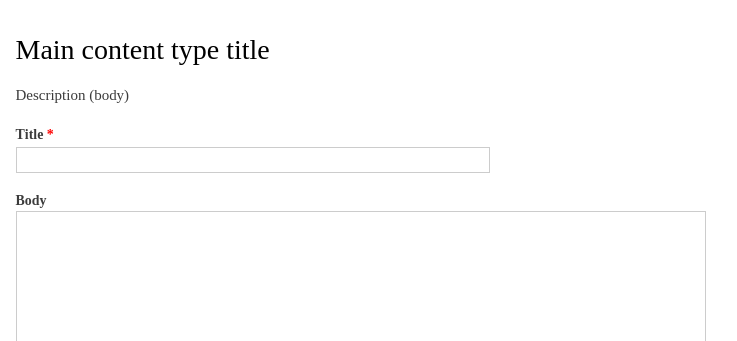
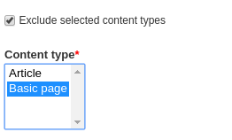

Abstraer requisitos de cliente en módulos para contribuir
Cristian Aliaga /
@AliagaDev
#DrupalCampEs
¿Requisito?
¿Módulo para contribuir?
¿Requisito
=
Módulo para contribuir?
Requisito
Requisito
Requisito
Requisito
Requisito
Módulo para contribuir
Mostrar los campos de nodo en un pdf formato dos columnas.
1. Printer, email and PDF versions
2. Field Group Table
3. ¿Campos en formato dos columnas?
Field Group Table component

Sandbox
Mostrar el breadcrumb entre campos de un nodo.
Breadcrumb extra field
Parte contribuible | parte custom
Mostrar el formulario de creación de un nodo dentro de la visualización de otro y ...
autocompletar si ya hay uno creado por ese usuario.
Node type Field
 
Solo necesitamos...
Perspectiva
Ventajas
Facilitamos y agilizamos mantenimiento. |
Delegamos el mantenimiento. |
No necesariamente implica más tiempo de desarrollo. |
Ayudamos a extender las funcionalidades base de Drupal. |
Mejoramos nuestro perfil como desarrolladores. |
¡Muchas gracias!
¿Preguntas?
Cristian Aliaga /
@AliagaDev